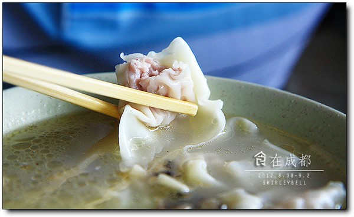

成都|藏在巷子里的美味
说走就走，是人生最华美的奢侈，也是最灿烂的自由。
对成都诱人的美食垂涎已久，对成都闲适的生活充满向往，这次正好有假，于是果断决定：去成都。
旅行就是从一个你待腻歪了的地方，到一个别人待腻歪了的地方。我对南京不腻歪，但是繁杂忙碌的工作让我透不过气，旅行是暂时逃离的最好方式。
功课做的不详细，景点的旅游规划也一点没有想好，就这么上路了。地图都没买，每天靠着手机里的“Google地图”、'大众点评'，打印带着的《成都美食攻略》，逛景点，尝美食，充满未知的旅行虽然有时让人措手不及，却也惊喜连连。
N年之前在杂志上看过一篇吴淡如的文章，'计划小型的逃走'，留下很深的印象，文中小型逃走的理由，也是我每每给自己找的“偷懒”理由。
'每一天的小型逃走，就是所谓的偷得浮生半日闲，就算静静的喝个下午茶，吃一块巧克力，也是减压的方法，找出适合自己的小型逃走方式，别在梦中不断的描画大型逃亡路线图，才是真正的「活在当下」！
如果懂得小型逃走，我们的情绪就不会积劳成疾；反之，如果每天为自己画大饼，却继续忍耐著精神上极端饥饿的生活，恐怕在吃到大饼之，闷烧的情绪压力锅就先爆炸了。 '
详细成都游记稍后奉上，先专门开辟一遍美食日志吧。
龙抄手
“抄手”是四川人对馄沌的特殊叫法。
创始于上世纪40年代左右，当时春熙路'浓花茶社'的张光武等几位伙计商量合资开一个抄手店，取店名时就谐'浓'字音，也取'龙凤呈祥'之意，定名为'龙抄手'。龙抄手的主要特色是：皮薄、馅嫩、汤鲜。抄手皮用的是特级面粉加少许配料，细搓慢揉，擀制成'薄如纸、细如绸'的半透明状。肉馅细嫩滑爽，香醇可口。龙抄手的原汤是用鸡、鸭和猪身上几个部位的肉，经猛炖慢煨而成。原汤又白、又浓、又香。
老公叫了一碗海味抄手。里面有香菇、青笋和一些海味，汤非常鲜美。

皮薄，肉嫩，汤鲜，果然是成都名小吃之一。
我叫了一碗酸辣抄手。对于喜欢吃辣的我来说，感觉比海味抄手更好吃。汤中还有好像还有酸菜，配上香香的辣油，酸酸辣辣，抄手好吃，汤也很好喝。只是，一大早空腹吃这个，胃不好的人可能会有点吃不消。
陈麻婆豆腐
中午，吃的网上都推荐的一家“陈麻婆豆腐”，也是成都很有名的一家店，有好几家分店。估计成都人都知道这家，因为在我们找不到地儿的时候，问了好几个路人，通通都知道在哪。
陈麻婆豆腐是由国家命名的一家“中华老字号”老牌名店。其创业于清朝同治初(1862年)，开业于成都北郊的万福桥。原名陈兴盛饭铺，主厨为陈春富之妻。陈氏所烹豆腐色泽红亮，牛肉粒酥香，麻、辣、香、酥、嫩、烫、形整，极富川味特色，陈氏豆腐很快便名播遐尔，求食者趋之若鹜，文人骚客常会于此。有好事者观其陈氏脸生麻痕，便戏之为'陈麻婆豆腐'，此言不胫而走遂为美谈。饭铺因此冠为'陈麻婆豆腐店'。清朝末年，陈麻婆豆腐就被列为成都的著名食品。
两个人食量都小，点了一份“麻婆豆腐”，一份“夫妻肺片”。

端上来的麻婆豆腐果然够惊艳，南京的麻婆豆腐有这样丰富的酱料么？绝对没有。
在微博上看到过正宗麻婆豆腐的视频教程，光调料就是将近十多种。
稍微搅拌一下，把上面的调料拌开，豆腐很入味。看起来很红的辣油，其实不是狠辣，最够味的是麻。吃到最后我老公都麻的受不了了，舌头上麻的像冒泡泡一样的感觉。
夫妻肺片。和南京卤菜店里买的夫妻肺片看起来也不一样。依然是重口味的调料，麻辣十足，连一向不太吃辣的老公，也大呼好吃，过瘾。
蜀九香 火锅
第一天的晚餐，去吃了一直很向往的正宗川味火锅“蜀九香”，也是成都十大火锅之一。
成都火锅的辣和麻早就文明在外，所以我们也没敢全点辣锅，点了个鸳鸯锅。锅一上来就感觉好笑，白锅就中间一小圈，辣锅围绕一圈。成都的火锅果然是辣为主。
其实很想点那种“九宫格”一样的火锅的，看起来很好玩，不过不能全吃辣，只好可惜的错过了。
这里吃火锅只有两种调料：“干碟”和“油碟”。油碟就是麻油，干碟下面我发图了，里面有五种料---胡椒粉、芝麻、花椒粉，还有不认识了。。 去的时候桌上已经摆好了一碗蒜泥、一碗香菜，想必是每桌必备的了。于是，没尝过鲜的要了一个干碟，一个油碟。事实证明，油碟更好吃。红锅已经狠辣的，捞出来的煮食蘸着蒜泥+香菜+麻油的油碟吃就很不错了。
翻滚吧，辣油！瞧这红汤诱人的。我自问还是挺能吃辣的人，可是在吃了一大半红锅以后，实在是辣的受不了了，两个人鼻涕一把眼泪一把的，最后改吃白锅了。-_-|||
“大众点评”翻出来，搜搜比较火的推荐菜是啥，点了千层肚、鹅肠、九香牛肉，还有一些蔬菜。
鹅肠筷子夹着下去，烫五秒钟就好了。牛肉吃起来也很嫩。千层肚还没拍照，服务员就给我把一整盘倒锅里了。⊙﹏⊙